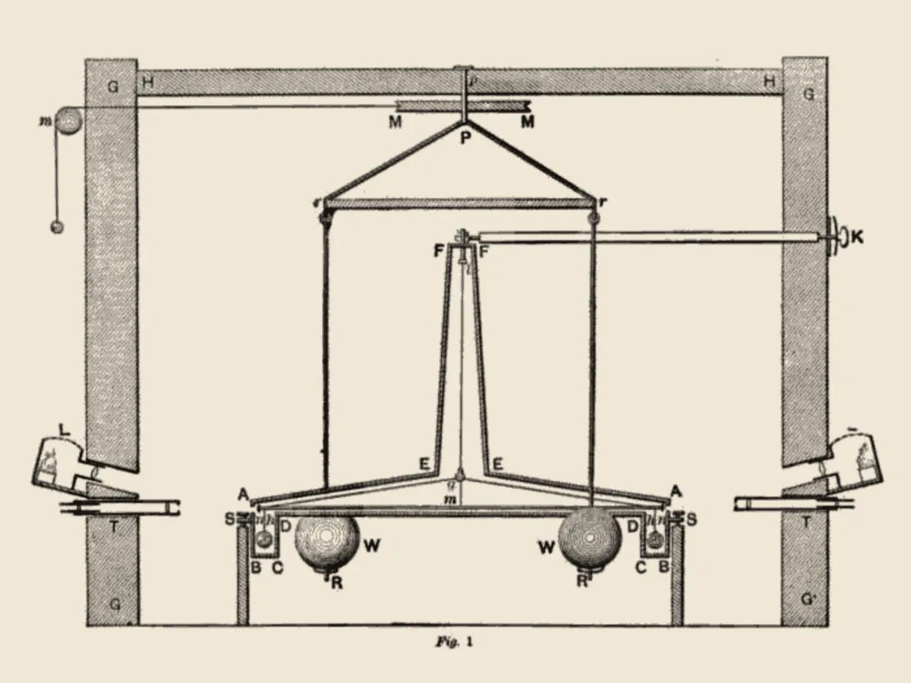

· Edición 85 · 4 min de lectura
Movieron un ascensor y mandaron una palabra a través de una pared

Movieron un ascensor y mandaron una palabra a través de una pared
En pocas palabras. Unos físicos de la Universidad de Queensland, en Australia, subieron y bajaron una y otra vez el contrapeso de un ascensor viejo. Al otro lado de una pared de ladrillo, un medidor de gravedad leyó la palabra «Gravity». Es un mensaje que ninguna pared puede tapar, porque nada tapa la gravedad; por ahora, eso sí, va a un bit por minuto.
El dato curioso. En 1798, el inglés Henry Cavendish colgó de un hilo una varilla de madera con una bolita de plomo en cada punta. Al lado puso dos bolas de plomo de unos 158 kilos y midió cuánto las atraían. Para medir no entraba al cuarto: miraba por un anteojo a través de la ventana y movía las bolas con poleas desde fuera. Con eso calculó cuánto pesa la Tierra por cada litro: unas cinco veces y media lo que el agua, a menos de 1 % del valor que se acepta hoy.
¿Qué hacía un medidor de gravedad en un baño? En el edificio Parnell de la Universidad de Queensland funciona un ascensor de los años cincuenta. En el baño de hombres de al lado, el equipo puso un gravímetro: un aparato comercial que mide cuánto jala la gravedad, con una pesa colgada de un resorte, como una balanza de cocina muchísimo más fina.
Entre los dos quedaban una pared de ladrillo y unos 70 centímetros. Luego mandaron el ascensor arriba y abajo, entre dos pisos.
¿Cómo se escribe con un ascensor? Con el contrapeso: el bloque de hierro, de unas 1,8 toneladas, que sube cuando la cabina baja. Abajo valía 0; arriba, 1. Un bit es eso, la unidad mínima de información: un sí o un no.
Cada letra iba en siete ceros y unos, el mismo código con el que los computadores guardan el texto. La palabra elegida fue «Gravity», gravedad en inglés. Con dos bloques de control, uno antes y otro después, el mensaje completo tomó 63 movimientos de un minuto cada uno.
El gravímetro lo descifró sin errores. Siete letras, 63 minutos: un telegrama con la paciencia de un ascensor.
¿Por qué tomarse tanto trabajo para una palabra? Porque todo lo demás se puede bloquear. Las señales de radio, las del celular y las del wifi se debilitan al atravesar la materia, y una caja metálica cerrada, llamada jaula de Faraday, las deja por fuera.
Quien haya perdido la señal dentro de un ascensor lo sabe. Aquí, el ascensor fue el emisor.
La gravedad no tiene jaula. Toda masa atrae a todas las demás y no hay material que la frene. Cuando el contrapeso cambiaba de posición, la gravedad en el baño variaba en unas cinco milmillonésimas. Si la báscula del baño fuera así de sensible, una persona de 70 kilos vería cambiar su peso en un tercio de miligramo.
¿De dónde salió la idea? De una báscula. Andrew Groszek, el primer autor del estudio, contó que la idea salió de un proyecto para pesar camiones sin que se subieran a nada, midiendo el jalón diminuto de su gravedad.
Quedaba una duda: el contrapeso es de hierro y podía mover la aguja por magnetismo. Pusieron un blindaje magnético y la señal siguió igual.
Entonces, ¿qué hacía el gravímetro en el baño? Escuchar al único mensajero que ninguna pared detiene. Lo pusieron donde la señal era más fuerte, a poco más de medio metro del contrapeso, pero al otro lado del muro, que era justamente lo que querían probar.
«No es frecuente poder demostrar una forma completamente nueva de comunicarse», dijo Matthew Davis, otro de los autores.
Pero ojo.
- Lentísimo. Un bit por minuto; según Andrew White, otro de los autores, una hora por palabra. Un celular corriente mueve millones de bits por segundo. (Conocimiento general.) Los autores dicen que no reemplaza a ninguna red.
- El futuro es un cálculo. Con sensores cuánticos, aparatos que miden usando átomos, sus modelos llegan a unos 500 metros y unos 15 bits por minuto, pero con supuestos que ellos mismos llaman bastante ambiciosos.
- Una prueba de principio. Fue una palabra, a 70 centímetros, en un solo edificio. Los autores lo presentan como la demostración de que se puede, no como un invento listo para usar.
Para conversar
La pregunta. Si cada letra tardara siete minutos en llegar, ¿qué palabra mandaría usted, y a quién?
Para leer más
Libros para seguir con el tema
Siete breves lecciones de física, de Carlo Rovelli (Anagrama, 2016; traducción de Francisco J. Ramos Mena). En la primera lección, un físico explica en pocas páginas la idea de Einstein de que la gravedad no es una fuerza misteriosa, sino la forma del espacio.
Una breve historia de casi todo, de Bill Bryson (RBA; traducción de José Manuel Álvarez Flórez). Un periodista curioso recorre la historia de la ciencia, incluidos los que intentaron medir y pesar la Tierra, como Cavendish.
¿Le interesa ver las fuentes?
Todos los documentos y datos que usamos
12 fuentes: 4 académicas, 1 de datos, 1 de una organización, 3 de prensa, 3 de referencia.
- Académica Groszek, Woffinden, Harvey, White y Davis, Science Advances (18 de noviembre de 2026), vol. 12, n.º 47. Unblockable communication with gravity
- Académica Groszek y otros, arXiv (versión previa del mismo estudio, noviembre de 2025). Unblockable Communication With Gravity
- Académica Universidad de Queensland, comunicado (noviembre de 2026). UQ researchers send an unblockable message using gravity
- Datos UQ eSpace, repositorio de la Universidad de Queensland. Unblockable communication with gravity: code for reproducing figures
- Prensa Phys.org (noviembre de 2026). Physicists send an unblockable message using gravity
- Prensa Gizmodo (noviembre de 2026). Physicists Sent a Message Encoded in Gravity Using an Elevator
- Prensa Interesting Engineering (noviembre de 2026). Scientists turn old university lift into a gravity-powered messenger
- Académica Henry Cavendish, Philosophical Transactions of the Royal Society of London (1798), vol. 88, pp. 469-526. Experiments to Determine the Density of the Earth
- Organización APS News, Sociedad Estadounidense de Física (junio de 2008). June 1798: Cavendish weighs the world
- Referencia Wikimedia Commons. Cavendish Experiment.png (figura 1 del artículo de Cavendish de 1798), ficha del archivo
- Referencia Sociedad Española de Astronomía, reseña del libro. Siete breves lecciones de física, de Carlo Rovelli (Anagrama, 2016; traducción de Francisco J. Ramos Mena)
- Referencia Lecturalia (ficha del libro y de la edición en español). Una breve historia de casi todo, de Bill Bryson (RBA; traducción de José Manuel Álvarez Flórez)

Glosario
Las palabras técnicas, explicadas
- Gravímetro: un aparato que mide la fuerza con que la gravedad jala en un lugar; el de este experimento usa una pesa y un resorte.
- Bit: la unidad mínima de información, un 0 o un 1.
- Contrapeso: el bloque pesado que equilibra la cabina de un ascensor y se mueve al revés que ella.
- Jaula de Faraday: una caja o malla de metal que deja por fuera las ondas de radio.
- Sensor cuántico: un aparato que mide con ayuda del comportamiento de los átomos y puede ser mucho más sensible que uno de resorte.
Nota metodológica
Cómo se hizo esta edición y qué no pudimos verificar
Por qué esta historia. Miramos seis candidatas de las últimas semanas: el mensaje por gravedad de Queensland; unas zanjas enormes en la llanura de Nullarbor, en Australia, que resultaron ser techos de cuevas hundidos (Curtin University); una estrella muerta que manda pulsos de radio cada ocho minutos mientras gira junto a una estrella parecida al Sol; un experimento del NIST, el instituto de metrología de Estados Unidos, que usa luz cuántica para verificar desde dónde se envía una orden; electrones que saltan entre niveles de energía que debían estar prohibidos en el grafeno; y miles de huesos de rana enterrados en un sitio de época romana. Elegimos la del ascensor porque se entiende sin saber física, porque tiene escena, personas y un giro (una báscula de camiones que terminó en telégrafo) y porque está publicada en una revista revisada por pares. Las zanjas y la estrella eran buenas, pero con menos historia humana; el NIST y el grafeno son difíciles de contar sin jerga; las ranas repetían arqueología, como la edición de ayer.
Qué verificamos y qué no. No pudimos abrir el artículo completo ni el comunicado de la universidad: trabajamos con la ficha del estudio, la versión previa y los resultados de búsqueda que reproducen partes de ellos. La distancia de unos 0,7 metros, el bit por minuto, los 500 metros y los 15 bits por minuto con sensores cuánticos, el tipo de gravímetro, la prueba del blindaje magnético y la variación de 50 nanómetros por segundo al cuadrado salen del estudio y de su versión previa. Las cinco milmillonésimas y el tercio de miligramo son nuestras cuentas a partir de esa cifra. Que el ascensor sea de los años cincuenta y que el baño sea el de hombres lo leímos en la prensa, no en el estudio. La masa del contrapeso aparece como 1,8 toneladas en el estudio y el comunicado, y como 1,9 en algunas notas. Los 63 minutos (49 bits de la palabra y 14 de control) salen de la versión previa y de varias notas que coinciden. Lo de Cavendish sale de su artículo de 1798 y de APS News; las medidas de las bolas varían un poco según la fuente.
Imagen y libros. La figura de Cavendish viene de Wikimedia Commons, en dominio público. Ninguno de los dos libros está en el catálogo de Santo & Seña; los datos salen de una reseña de la Sociedad Española de Astronomía y de Lecturalia.